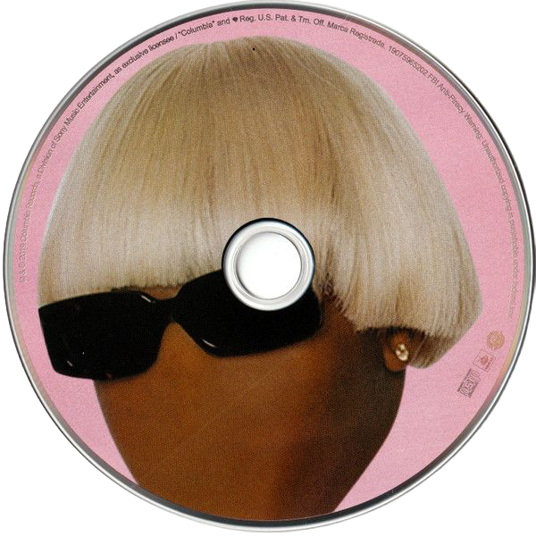

Music is a really big part of my life, I can say this with confidence as my Spotify wrapped showed that I've listened to 61,490 minutes of music last year. This being said, the music I listen to on a particular day, week, month, tends to be very reflective of what I'm feeling, and it helps me navigate my emotions better. IGOR, do I even need to say anything about this album. It's one of Tyler the Creator's most critically acclaimed albums and for good reason. There is such a variety of sound in this album, with so much intricacies and depth to it, but also all the songs are fire. There's something particular about the songs GONE, GONE/THANK YOU and RUNNING OUT OF TIME that make me feel like I'm falling down a rabbit hole of sorts, or like I'm running through an infinite cornfield. That being said those two + I THINK are my favourite songs from the album. You should listen to it sometime. * .. . ✦⠀ , * ⠀ ⠀ , * . , * ⠀ ⠀ ,⠀⠀⠀⠀⠀⠀⠀⠀⠀⠀⠀⠀. ⠀ ⠀.